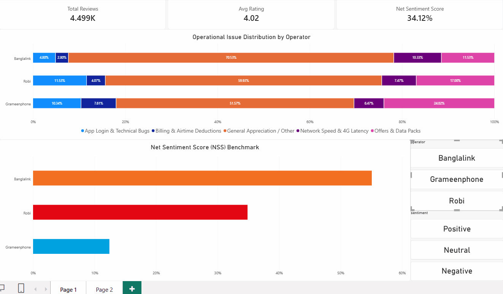
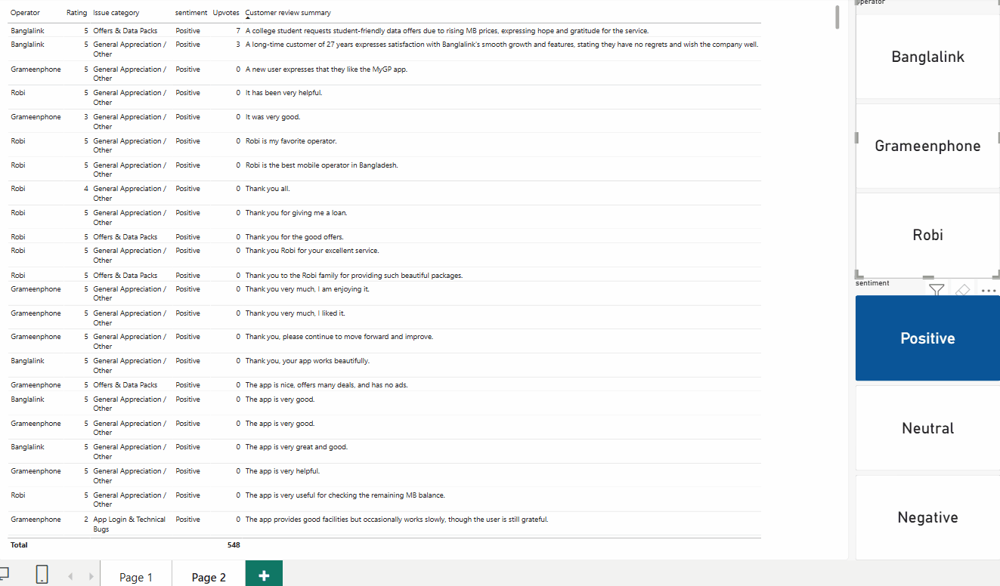

Cross-Operator Voice of Customer (VoC) Intelligence Engine
An enterprise end-to-end data processing and analytics architecture aggregating and diagnosing 4,500+ localized user reviews across Grameenphone (MyGP), Banglalink (MyBL), and Robi Axiata (MyRobi).
Parsed from Google Play Store across all three major nationwide operators.
Resolved code-mixed Bangla, English, and phonetic Banglish feedback.
Formulated Churn Risk Index, Net Sentiment Score, and App Release trend lines.
Cross-Operator Market Benchmarking & Sentiment Dynamics

Place your Page 1 GIF in: assets/images/projects/voc-powerbi-page1.gifFigure 1: Cross-filtering Net Sentiment Scores, ratings trajectories, and operator-level market share in Power BI.
The Engineering Challenge
Mobile self-care applications represent the primary touchpoint for millions of telecom subscribers in Bangladesh. However, app store customer feedback is linguistically complex and noisy: reviews frequently intermingle pure Bengali unicode, formal English, and code-mixed phonetic Banglish. Traditional lexicon-based NLP models fail when handling colloquial sarcasm, regional idioms (e.g., "megabyte kete niyeche"), and compressed alphanumeric syntax surrounding balance recharges, OTP latency, or dropped 4G/5G data sessions.
Pipeline Architecture & Ingestion Flow
To transform unformatted app reviews into structured enterprise intelligence, a three-stage automated workflow was developed:
- Automated Extraction: Python-based scrapers querying Google Play APIs to extract full review histories, chronological timestamps, device metadata, app version tags, and star ratings across MyGP, MyBL, and MyRobi.
- Semantic Normalization & Entity Tagging: Leveraged batch processing pipelines via LLM APIs to translate, decode phonetic strings, classify user sentiment polarity, and tag specific functional entities.
- Relational Star Schema: Transformed normalized records into a performant dimensional data model structured with a centralized sentiment fact table linked to conformed dimensions for dates, operators, and issue taxonomy.
Granular Issue Taxonomy, UX Friction & Churn Triggers

Place your Page 2 GIF in: assets/images/projects/voc-powerbi-page2.gifFigure 2: Diagnosing churn drivers across recharge failure rates, login barriers, and app update regression bugs.
Business Intelligence & DAX Measures Formulation
Connecting the modeled star schema into Power BI allowed the construction of specialized analytical formulas designed to isolate systemic operational defects from transient user complaints:
Net Sentiment Score (NSS)
Formulated dynamic DAX measures calculating the spread between positive and negative reviews across rolling weekly windows, providing leadership with immediate alert flags during degraded app releases.
Release Regression Index (RRI)
Measures baseline sentiment shifts correlated against app build release numbers, isolating whether customer dissatisfaction originates from UI re-designs or payment gateway timeouts.